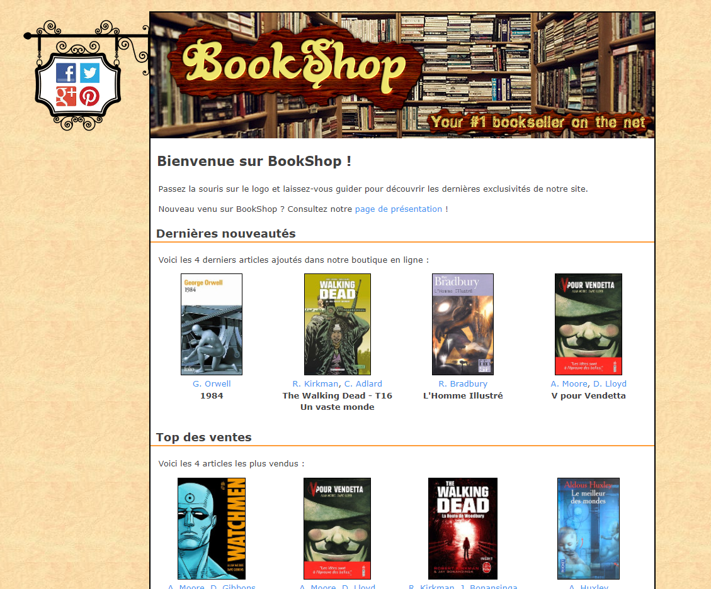
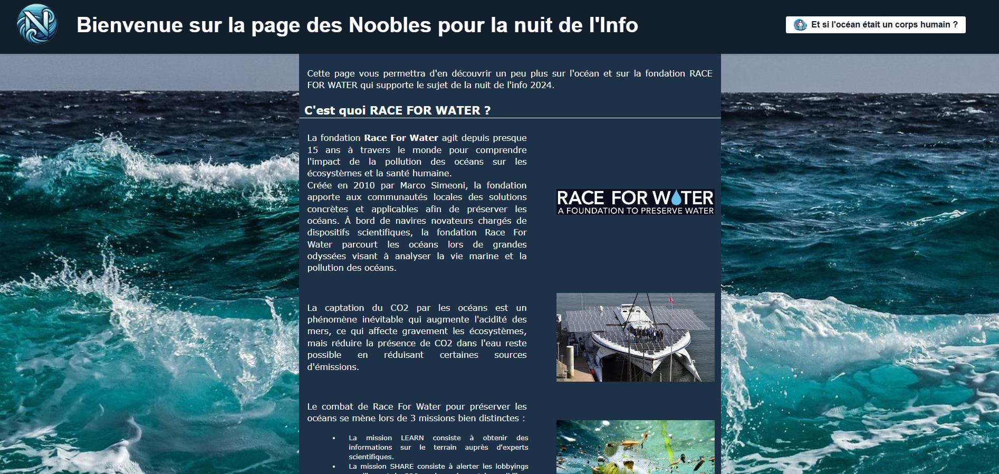
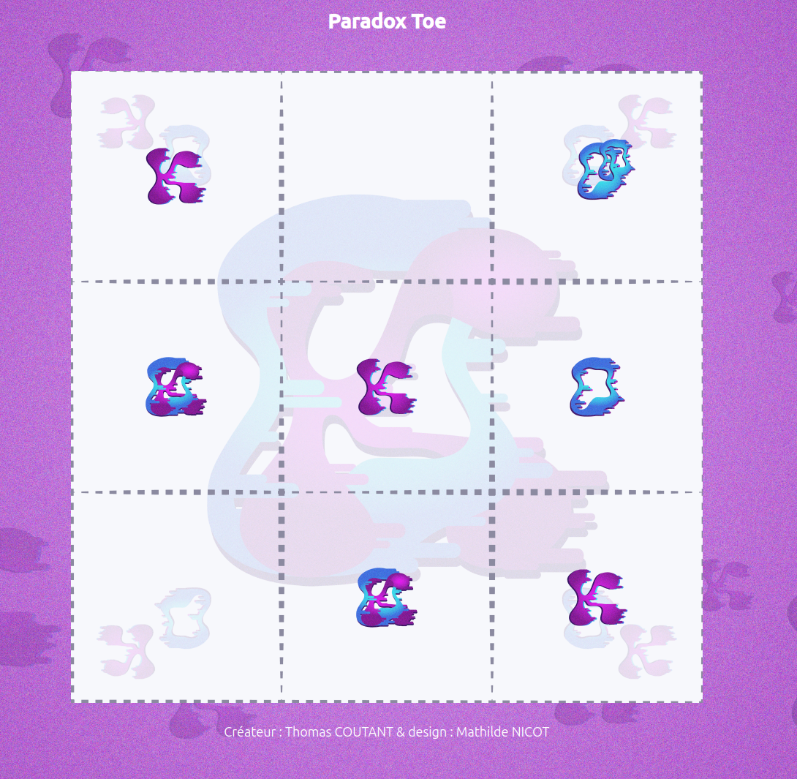

Présentation
Je m'appelle Thomas COUTANT, j'ai 17 ans et je suis étudiant en première année de DUT Informatique à l'IUT de Nantes.
J'ai commencé à apprendre le HTML et le CSS en autodidacte il y a quelques années, et j'ai décidé de poursuivre dans cette voie en intégrant un DUT Informatique.
Je suis actuellement à la recherche d'un stage de 10 semaines à partir du 2 mai 2022. Si vous êtes intéressé, n'hésitez pas à me contacter !
Mon CV
Voici mon CV. Cliquez sur le lien pour l'ouvrir :
Télécharger mon CV (PDF)Mes Codes

Projet 1 : Bookshop
Un site réalisé en HTML et CSS, réalisé dans le cadre des cours de WEB
Ce site comporte 3 pages. la barre de navigation ne marche que pour le gros logo et le bonhomme.

Projet 2 : Nuit de l'info 2024
Site réalisé avec l'équipe des Noobles lors de la nuit de l'info sur le thème : Et si l'océan était un corps humain
Ce site comporte 9 pages dont 3 mini-jeux. Parmi ceux-ci, seul le jeu du labyrinthe dans le noir est de ma seul composition

Projet 3 : Paradox Toe
Jeu inspiré du jeu de morpion ou tic tac toe, réalisé à l'occasion de la journée de recherche et développement du 27 mars 2025
Téléchargements
Application Linux :
Télécharger pour LinuxApplication Windows :
Télécharger pour WindowsSur Linux, il est possible que vous ayez besoin de le rendre exécutable : chmod +x paradox_toe_v0.8_linux
Test animation : Formes
Différents tests avec des formes, des couleurs, des emplacments
Test animation : Lampe à lave
Test de simulation de lampe à lave
Test animation : Spheres
Test de simulation d'une sphere en 3d